Общие сведения о современных легковых автомобилях
Чем характеризуется современный автомобиль?
Автомобиль давно уже является неотъемлемым атрибутом повседневной жизни человечества. Первый автомобиль был создан в далеком 1886 году, с тех пор прошел длинный эволюционный путь от примитивного с современной точки зрения устройства, напоминающего мотоколяску (рис. 1.1), до мощного многофункционального средства передвижения, без которого невозможно представить жизнь современного человечества (рис. 1.2).
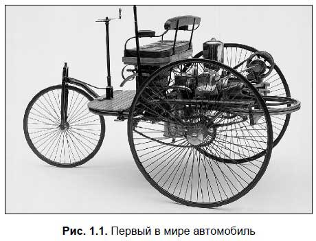
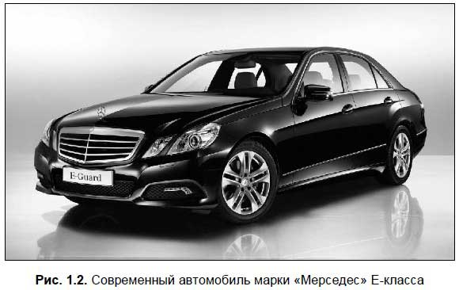
На собственных авто разъезжают представители всех социальных слоев общества: молодежь и пенсионеры, учащиеся и домохозяйки, врачи и депутаты, сельчане и олигархи. Более того — во многих странах право сесть за руль имеют даже школьники старших классов.
Такая популярность автомобильного транспорта обусловлена многими причинами, и главная из них — это очевидный комфорт и удобство. Вы едете в удобной позе, наслаждаясь музыкой или в полной тишине, зимой — в теплом салоне, а летом — в прохладном (если, конечно, в машине есть климат-контроль или кондиционер).
Еще одно преимущество личного автотранспорта — независимость и возможность абстрагироваться от окружающей среды. Вы избавлены от необходимости подстраиваться под расписание общественного транспорта — ведь личное авто всегда под рукой. В своей машине вы вольны курить, когда пожелаете (хотя курение за рулем отвлекает от управления автомобилем, поэтому так поступать не рекомендуется), слушать радио, везти с собой большое количество багажа (с которым ни в один автобус не сунешься) и т. д. Многие вообще считают, что личное авто — это своеобразный филиал собственной квартиры, эдакий свой мир.
Профессиональные водители с помощью автомобиля зарабатывают себе на хлеб. Ну а поскольку они кого-то и что-то возят — значит, существует еще масса людей, так или иначе зависящих от автотранспорта: получатели грузов, пассажиры общественного транспорта и такси, ждущие «скорой помощи» пациенты и т. д.
Бывают случаи, когда до места назначения, кроме как на машине, больше ни на чем не доберешься (либо это слишком долго и дорого). С такими ситуациями не понаслышке знакомы, например, многие дачники либо люди, у которых работа находится далеко (например, за городской чертой) и др.
Стоит учитывать и такой существенный для многих людей фактор, как престиж и социальное положение человека. Не секрет, что здесь одним из основных критериев является марка личного автомобиля. Многие состоятельные люди соревнуются и стремятся перещеголять друг друга, приобретая самые дорогие и эксклюзивные авто: «Майбахи» и «Ламборджини», «Мерседесы» и «БМВ», «Бентли» и «Ягуары» и т. д. Однако тщеславие характерно и для простых людей, поэтому многие из них стараются выбрать автомобиль, руководствуясь не только соображениями практичности, но и стремлением продемонстрировать свои возможности.
Но современный автомобиль — это удовольствие достаточно дорогое, и здесь речь идет не только о его стоимости (что само собой), но и о последующем содержании. Ведь машине нужно отдельное помещение (гараж или стоянка), ее необходимо обеспечить топливом и расходными материалами, за ней нужно ухаживать (делать техническое обслуживание, антикоррозийную обработку кузова и т. д.), и все равно в любой момент она может сломаться, вынудив своего владельца выложить за ремонт кругленькую сумму денег. Нередко владелец автомобиля вынужден тратить на его содержание не меньше денег, чем на содержание собственной семьи.
Однако это не останавливает автолюбителей, и с каждым годом количество машин на российских (да и не только на российских) дорогах стремительно увеличивается. Соответственно, постоянно растет число людей, стремящихся поскорее получить водительские права и сесть за руль собственной машины.
Как исправность автомобиля влияет на безопасность движения?Из всех видов транспорта люди больше всего боятся самолетов, и меньше всего — автомобилей. Это один из самых известных парадоксов современности: ведь уже даже дети знают, что самолет является самым безопасным видом транспорта, а автомобиль — напротив, самым опасным. Именно так — не одним из самых опасных, а именно самым опасным из всех, которые существуют.
Стоит заметить, что автопроизводители предпринимают определенные меры для повышения безопасности водителей и пассажиров. Самым известным таким средством является ремень безопасности, которым должен пристегиваться каждый водитель и пассажир легкового автомобиля. К сожалению, многие водители пренебрегают этой мерой безопасности, в результате чего число жертв и пострадавших в автокатастрофах намного больше, чем могло бы быть.
Все современные автомобили оборудованы ремнями безопасности (рис. 1.3) — как для водителя, так и для пассажиров. Правда, еще встречаются машины, у которых наличие ремня безопасности конструктивно не предусмотрено, но их осталось немного и их число с каждым годом уменьшается по естественным причинам, поскольку это старые машины выпуска где-то 50-60-х годов прошлого столетия («Победа», «Волга ГАЗ-21», «Запорожец ЗАЗ-965» и др.). На многих современных автомобилях устанавливаются трехточечные ремни безопасности с преднатяжителями.
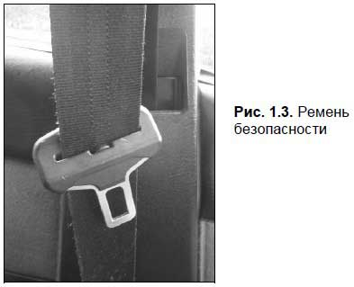
Помимо ремня безопасности, многие современные автомобили оборудуются подушками безопасности. Это довольно эффективное средство защиты: при любом более-менее сильном ударе они автоматически моментально надуваются, защищая водителя и пассажиров от повреждений. В настоящее время наиболее распространены подушки безопасности трех видов: фронтальные, боковые и подушки-шторки.
Также современные автомобили имеют следующие средства защиты.
? Зоны деформации кузова.Сущность состоит в том, что при ударе в случае ДТП кузов особым образом деформируется, поглощая энергию удара. Иначе говоря, деформирующийся кузов защищает салон, принимая основную энергию удара на себя и поглощая ее за счет смятия.
? Защитный каркас, встроенный в кузов.Этот элемент кузова, изготовленный из высокопрочного металла, образует своего рода «капсулу безопасности» для пассажиров и водителя.
? Складывающаяся рулевая колонка.В момент удара она как бы «ломается» и складывается, что позволяет водителю избежать травм грудной клетки и расположенных за ней внутренних органов.
? «Ломающиеся» педали.В результате многих ДТП водитель получает переломы ног (обычно это голень) от удара о педаль, поэтому в современных автомобилях педали в момент удара «ломаются».
? Защитные балки в дверях.Это мощные металлические балки, встроенные в двери и защищающие салон при боковом ударе.
Однако безопасность движения зависит не только от наличия и использования специальных защитных средств, но и от целого ряда других факторов.
Одной из наиболее распространенных причин возникновения тяжких ДТП является переутомление водителя.Всегда следует помнить незыблемое правило водителя: устал — отдохни! Если вы чувствуете, что переутомились (особенно при длительной поездке) — выберите подходящее место, остановитесь и отдохните, хотя бы недолго.
Существуют три степени водительского утомления. Легкая степень характеризуется зевотой и тяжестью век. При средней степени появляется резь в глазах, сухость во рту, какие-то фантазии; по телу может проходить теплая волна, и кажется, что другие машины едут очень медленно. При сильной степени утомления клонится вперед голова, руки сползают с руля, в глазах рябит, человек потеет и ему кажется, что все это происходит не с ним.
Вы можете снять легкое утомление, умывшись прохладной водой, либо немного отдохнув, либо выпив крепкого чаю. Но при среднем или сильном утомлении вам поможет только сон.
Если вы планируете отправиться в дальнюю дорогу — поспите перед тем, как выехать, не менее 7 часов, и не принимайте никакие успокоительные препараты. В пути периодически отдыхайте: остановитесь, выйдите из машины, разомнитесь. По возможности не ездите ночью и не наедайтесь слишком сильно перед дорогой — это способствует сонливости.
Если говорить о безопасности езды на автомобиле, то следует упомянуть о таком негативном факторе, как курение за рулем. Вспомните: в момент прикуривания вы смотрите на кончик сигареты, а не на дорогу. А ведь дорожная ситуация изменяется постоянно, и может хватить одного мгновения, чтобы вовремя не заметить появившееся препятствие на дороге! Также водитель отвлекается на то, чтобы достать спички или зажигалку либо стряхнуть пепел в пепельницу. При этом ему кажется, что он мгновенно перемещает взгляд с одного объекта на другой, а реально на это уходит около 1 секунды.
Помни об этом.
На скорости 70 км/ч автомобиль за одну секунду проходит около 20 метров! А поскольку водитель при курении переводит взгляд не только с дороги на сигарету (пепельницу, зажигалку и др.), но и обратно, то это расстояние следует удвоить.
Однако наибольшая опасность на дороге исходит от пьяных водителей. Уж сколько раз твердили миру, что пьянство за рулем — это зло, однако все равно по вине нетрезвых водителей совершается огромное количество дорожно-транспортных происшествий. Причем распространенной ошибкой является то, что многие полагают: если выпить совсем немного, то ничего плохого не случится.
Однако это совсем не так: многочисленные официальные исследования подтверждают, что для водителя опасны как большие, так и малые дозы алкоголя.
Учтите.
Употребление всего 50 г водки повышает вероятность возникновения дорожно-транспортного происшествия в 2–3 раза. Ну а разговоры об отрезвляющем действии нашатырного спирта, кофе, чая, кратковременного сна и т. п. — не более, чем полный бред!
Результаты исследований, проведенных с помощью меченых изотопов, показали наличие алкоголя в коре головного мозга даже через 20 дней после его приема. Получается, что даже по истечении такого времени алкоголь может оказывать свое пагубное воздействие на состояние водителя. А ведь многие любят сесть за руль «после вчерашнего», с чувствительным «выхлопом» изо рта, полагая, что они в «полном порядке» и забывая о своей сниженной реакции и значительном содержании остатков алкоголя в организме.
Почему нетрезвый водитель считается более опасным для окружающих, нежели нездоровый или просто переутомленный? Ответ прост: в последних двух случаях человек осознает, что его возможности ограничены, и старается соблюдать повышенную осторожность. Пьяный же ведет себя как минимум неосмотрительно, а нередко — еще и агрессивно, и не в состоянии адекватно оценивать свои действия.
Пьяному водителю кажется, что до объекта на дороге (до пешехода, до другой машины и др.) около 30 метров, тогда как в реальности это расстояние не превышает 15–18 метров. Он полагает, что нажал на тормоз мгновенно, а на самом деле — с заметным опозданием. Уже после приема 25 г алкоголя появляется труднопреодолимое и необоснованное желание рискнуть на дороге.
Каждый водитель обязан знать: автомобиль является источником повышенной опасности.Это официальное юридическое понятие, которое налагает на водителя дополнительную ответственность. Следовательно, находясь за рулем, человек управляет источником повышенной опасности, и все его действия в случае возникновения непредвиденных обстоятельств будут рассматриваться именно с этой точки зрения.
Виды современных легковых автомобилейВсе современные автомобили можно классифицировать по ряду признаков, наиболее характерными из которых являются: привод автомобиля, тип двигателя, его объем и тип кузова.
За счет чего едет автомобиль? Если кто-то не знает — поясним: за счет того, что тепловая энергия сгорания, которая образуется в двигателе, превращается в механическую энергию вращения, которая в свою очередь передается на ведущие колеса, а уже они приводят автомобиль в движение. В зависимости от того, какие колеса у машины являются ведущими, все автомобили можно разделить на три категории: переднеприводные, заднеприводные и полноприводные.
У переднеприводныхмашин ведущей является передняя пара колес. Характерной особенностью таких автомобилей является отсутствие у них карданного вала. Переднеприводные машины отличаются высокой маневренностью, а также возможностью более легкого выхода из заноса.
Заднеприводныемашины приводятся в движение задней парой колес. В данном случае для передачи крутящего момента от двигателя к колесам используется карданный вал, который тянется от передней части автомобиля к заднему мосту. Отметим, что в бывшем СССР долгое время выпускались только заднеприводные машины; первым переднеприводным автомобилем, совершившим своеобразную революцию в отечественном автомобилестроении, стал ВАЗ-2108. Эти машины начали сходить с конвейера во второй половине 80-х годов прошлого века.
Как читатель уже наверняка догадался, что полноприводные машины — это те, у которых ведущими являются все четыре колеса. Отметим, что при необходимости водитель может отключить любой ведущий мост — например, с целью экономии топлива.
Среди советских легковых машин первым полноприводным автомобилем стала знаменитая «Нива» (рис. 1.4).
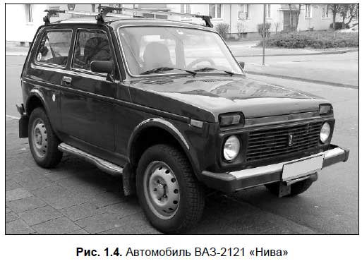
Но у нее отключение какого-либо моста конструктивно не предусматривалось. Однако отечественные автомобилисты быстро нашли простой выход: они снимали «лишний» карданный вал. В результате на соответствующий мост крутящий момент не передавался, и он, разумеется, не работал. Это делалось с целью экономии топлива.
Характерной особенностью и главным достоинством полноприводных машин является их повышенная проходимость. Это позволяет ездить на них в условиях, при которых обычный автомобиль эксплуатировать невозможно: в снежных сугробах, на болотистой местности, на дорогах с расползающимися в грязи колеями (например, в лесу) и т. д. В настоящее время наиболее известными представителями полноприводных автомобилей являются джипы.
В зависимости от типа установленного двигателя автомобили можно разделить на две категории: работающие на бензине либо работающие на дизельном топливе, коротко — бензиновые и дизельные. Несмотря на то, что и у тех, и у других имеется масса поклонников, и споры о преимуществах и недостатках каждого вида идут много лет, однозначно никто не скажет, что лучше: бензин или дизель.
Если кто-то не знает — поясним: дизельным топливомявляется обыкновенная солярка, на которой в том числе работают трактора и другая сельхозтехника, военная техника, дизель-поезда и др.
Принципиальное отличие бензинового двигателя от дизельного состоит в том, что в бензиновом моторе топливо сгорает от искры, которую производит свеча зажигания, а в дизельном воспламеняется от свечи накаливания. Отметим, что дизельный двигатель намного дороже в производстве — его стоимость примерно на 25–30 % выше, чем у бензинового. Это обусловлено в первую очередь предельно сложной технологией производства: при выполнении некоторых операций и технологических процессов необходимо соблюдать просто космическую точность.
Зато в эксплуатации большинство дизельных двигателей являются более экономичными, нежели их бензиновые собратья (разница в потреблении топлива на 100 км пробега может составлять от 2 до 5 литров). С другой стороны, «дизеля» уступают бензиновым моторам в приемистости: бензиновые машины, как правило, более резво ведут себя на дороге.
В зимних условиях дизельный мотор может оказаться ненадежным: не секрет, что при низких температурах солярка густеет, и машина просто глохнет. Однако это относится в первую очередь к старым автомобилям; на современных машинах все особенности холодного климата учтены, и «дизеля» по надежности не отстают от бензиновых моторов. Главное — заливать качественное топливо, и в холодное время года ездить на «зимней» солярке.
Также автомобили можно классифицировать по литражу двигателя. Даже новичок знает, что мощность двигателя в первую очередь зависит от его объема, который измеряется либо в кубических сантиметрах, либо, что гораздо чаще — в литрах. В зависимости от литража двигателя все автомобили можно разделить на следующие категории:
? особо малый класс;
? малый класс;
? средний класс;
? большой класс.
У автомобилей особо малого класса объем двигателя не превышает 1,1 литра. Наиболее характерный представитель — ВАЗ-1111 («Ока»), рис. 1.5.
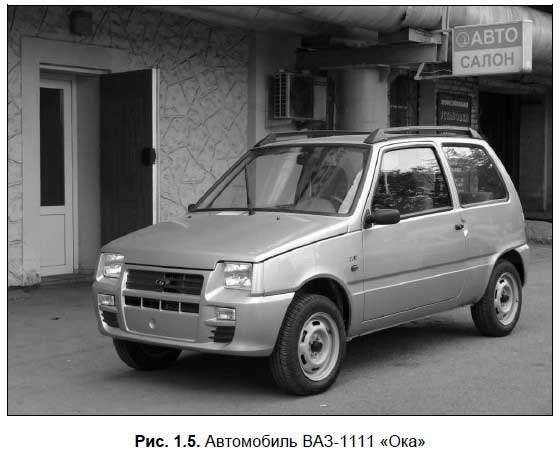
Машины этого класса не могут похвастаться высокой мощностью, поскольку созданы для других целей, в первую очередь — для городских поездок (шоппинг, работа и т. д.): за счет небольшого размера они маневренны, а двигатель маленького объема потребляет немного топлива.
Автомобили малого класса обладают двигателем объемом от 1,1 до 1,8 литра. Таковыми являются, например, все модели классических «Жигулей», ВАЗ-2108 и ВАЗ-2109, «Москвичи», а из иномарок — «Опель-Астра», «Форд-Эскорт», «Фольксваген-Гольф» и др. Эти машины более мощные и скоростные, нежели их собраться особо малого класса, а также им требуется больше топлива.
К автомобилям среднего класса относятся машины с объемом двигателя от 1,8 до 3,5 литра. Из представителей советского автопрома к ним относится только «Волга» (ГАЗ-21, ГАЗ-21, ГАЗ-3110 и др.), из иномарок — «Мерседес», «Опель-Омега», «Форд-Мондео», «БМВ», «Ауди» и др. У таких автомобилей довольно большой и вместительный кузов, они отличаются высокой мощностью и приемистостью. Однако двигатель большого объема, само собой, требует больше топлива, поэтому экономичными такие машины никак не назовешь.
Что касается большого класса, то к нему относятся все легковые автомобили с объемом двигателя более 3,5 литров. Большой кузов, салон — почти малогабаритная квартира, высокая мощность — вот основные свойства таких машин. Топлива потребляют еще больше, чем их собратья среднего класса. Советский (российский) автопром таких автомобилей не выпускал (кроме «Чайки» и правительственных «ЗИЛов»), а из иномарок это и «Мерседес», и «БМВ-750», и «Лексус», и др.
Отметим, что автомобили большого класса иногда подразделяют на машины бизнес-класса и люкс-класса (к последним относятся самые большие и мощные автомобили).
Также современные автомобили можно классифицировать по типу кузова. Самыми известными типами кузовов являются: седан, хэтчбэк, универсал, вагон, лимузин, кабриолет, минивэн.
Наиболее распространенным в настоящее время типом кузова является «седан». Такой автомобиль имеет две или четыре двери и рассчитан на 4–5 пассажиров. Моторный отсек и багажник являются выступающими, причем багажник отделен от пассажирского салона. Наиболее характерный пример автомобиля с типом кузова «седан» — классические модели «Жигулей» (ВАЗ-2101, ВАЗ-2105 и др. (рис. 1.6). В бывшем СССР подавляющее большинство легковых автомобилей выпускалось именно с таким кузовом.
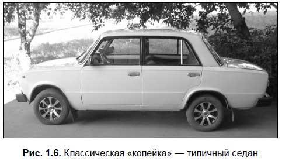
Тип кузова «хэтчбэк» (рис. 1.7) также пользуется популярностью, хотя и не столь широко распространен, как «седан». Хэтчбэк имеет две или четыре боковые пассажирские двери и еще одну — грузовую, расположенную в задней части кузова. Грузовая дверь открывается вертикально, а заднее сидение можно сложить, благодаря чему объем багажного отделения существенно увеличивается. В стандартном же состоянии багажник хэтчбэка уступает по вместительности багажнику седана. Из представителей советского автопрома тип кузова «хэтчбэк» был у ВАЗ-2108, ВАЗ-2109, «Иж-Комби», «Москвич АЗЛК-2141». Что касается иномарок, то здесь примеров можно привести великое множество: с такими кузовами выпускаются и «Опель-Астра», и «Форд-Эскорт», и «Ауди», и др.
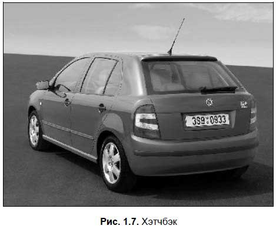
Пока еще относительной экзотикой в России являются машины с типом кузова «кабриолет» (рис. 1.8). У таких машин кузов открытый, они действительно имеют много преимуществ, но в подавляющем большинстве совершенно не приспособлены для езды в российских условиях. Дело в том, что они созданы для эксплуатации в теплое время года. Однако на российских дорогах (особенно грунтовых) в этих машинах все покрывается пылью (в том числе и пассажиры), а при движении по мокрой дороге всех находящихся в салоне может облить из грязной лужи проходящий мимо трактор или грузовик. А в условиях российской зимы «кабриолет» и вовсе неприемлем.
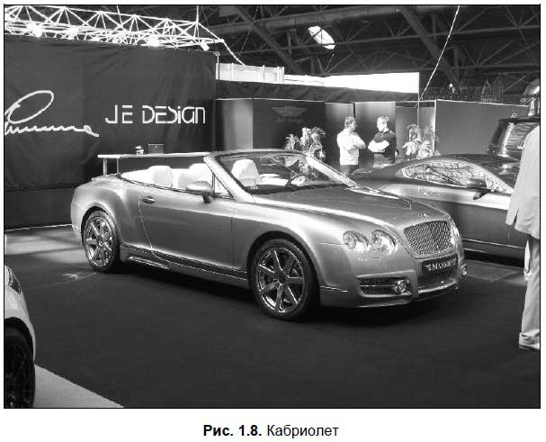
Близким родственником кабриолета является тип кузова «родстер». Это пассажирский двухместный автомобиль с тентовым верхом, который при необходимости можно сложить.
Тип кузова «вагон» больше похож на пассажирский микроавтобус: у него отсутствуют выступающие моторный отсек и багажник. Наиболее характерный пример такого автомобиля — «Газель».
Сильные мира сего любят ездить в автомобилях с типом кузова «лимузин». Все мы видели лимузины если не «вживую», то, по крайней мере, по телевизору. Такие машины обладают большим вместительным кузовом, дополнительными сидениями, а также перегородкой, которая отделяет водителя от пассажиров.
Распространенным типом кузова является «универсал» (рис. 1.9). У таких машин грузопассажирский салон, две или четыре боковые двери и еще одна — пятая, которая расположена сзади и является грузовой (т. е. закрывает багажное отделение). Из всех легковых машин багажник универсала является наиболее вместительным, поэтому такие машины очень любят российские дачники. Кроме этого, в таких автомобилях удобно совершать семейные поездки. Заднее сидение при необходимости можно сложить, благодаря чему багажное отделение увеличивается чуть ли не в два раза; после этого в нем можно перевозить крупногабаритные грузы (например, холодильник). Классические представители советского (российского) автопрома, обладающие кузовом типа «универсал» — это ВАЗ-2102 и ВАЗ-2104. Что касается иномарок, то с таким кузовом выпускают и «Мерседес», и «Опель-Омега», и «Форд-Эскорт», и «БМВ», и др.
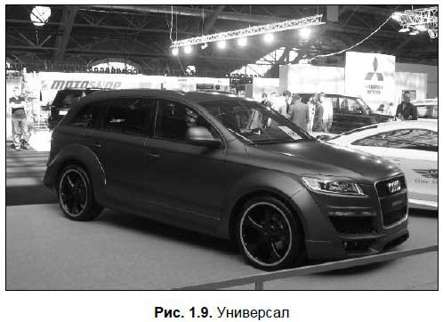
Разновидностью «универсала» является тип кузова «минивэн». Такая машина вместительнее, у нее подвеска более высокая, она несколько напоминает «мини-микроавтобус». Характерный пример — «Рено Сценик» или «Фольксваген Шаран».
Часто на российских дорогах можно встретить автомобили с типом кузова «купе» (рис. 1.10). У них две или четыре двери, а посадочные размеры задних сидений как бы «стеснены», или «сжаты». Багажник небольшой, двухдверная машина хорошо подходит для городских поездок — например, на работу, по магазинам и т. д.
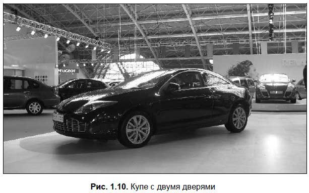
Во многих странах мира пользуются популярностью автомобили с типом кузова «пикап». Такой кузов характеризуется тем, что у него за кабиной расположена грузовая платформа, и он внешне напоминает мини-грузовик (рис. 1.11).
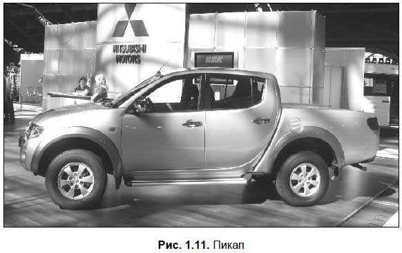
Любой легковой автомобиль, независимо от производителя, марки и модели, состоит из трех основных частей: двигателя, шасси и кузова. В данном разделе мы подробно расскажем только о кузове, а на остальных элементах остановимся кратко, поскольку их более подробное описание приведено ниже, в соответствующих главах книги.
Двигатель— это источник механической энергии, которая приводит автомобиль в движение. Он преобразует тепловую энергию, образующуюся при сгорании топлива, в механическую, которая создает на валу двигателя крутящий момент, используемый для движения автомобиля. Как правило, двигатель располагается в передней части автомобиля, однако есть и исключения — например, тот же «Запорожец». Часть кузова, где находится двигатель, называется моторный отсек (рис. 1.12).
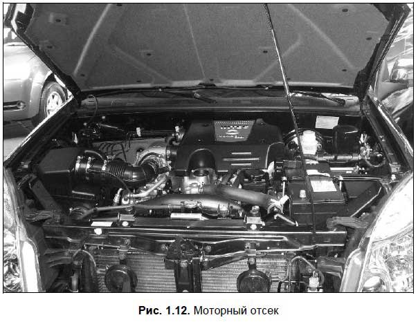
Шассивключает в себя три группы механизмов: трансмиссию, ходовую часть и механизмы управления.
Трансмиссияпредназначена для передачи крутящего момента от двигателя к ведущим колесам, а также для изменения крутящего момента в зависимости от текущих условий движения автомобиля. Составными частями трансмиссии являются: коробка переключения передач, сцепление, карданная передача, главная передача, дифференциал, полуоси.
Знайте.
У переднеприводных автомобилей, а также у заднеприводных автомобилей, у которых двигатель установлен сзади, карданная передача отсутствует.
Коробка переключения передачпредназначена для изменения крутящего момента, передаваемого на ведущие колеса автомобиля, для езды задним ходом, а также для отключения двигателя от трансмиссии (точнее — от ведущих колес) при движении «накатом», а также во время длительной стоянки автомобиля.
Сцеплениенеобходимо для кратковременного отключения двигателя от трансмиссии (ведущих колес) и плавного их соединения при работающем двигателе. Это необходимо при переключении передач, а также при трогании с места.
Карданная передачапредназначена для того, чтобы передавать крутящий момент между валами, которые расположены под углом, изменяющимся при движении автомобиля. С помощью главной передачи осуществляется увеличение крутящего момента и его передача под прямым углом на полуоси автомобиля. В свою очередь, полуоси передают крутящий момент на ведущие колеса.
Для того чтобы ведущие колеса автомобиля вращались с различными скоростями там, где это нужно (на поворотах, при езде по ухабистой дороге), используется специальный механизм, называемый дифференциал.
Ходовая частьлегкового автомобиля внешне напоминает обыкновенную тележку и включает в себя совмещенный с кузовом подрамник (в легковых автомобилях чаще используется просто несущий кузов), передний и задний мост, подвеску (с рессорами и амортизаторами) и колеса.
На совмещенном с кузовом подрамнике крепятся агрегаты автомобиля. Отметим, что в некоторых легковых автомобилях имеется отдельная рама, выполняющая эти функции.
Мостыавтомобиля предназначены для поддерживания кузова, через них вертикальная нагрузка передается на колеса. С помощью подвески устанавливается упругая связь кузова с мостами (колесами), а посредством колес осуществляется связь всего автомобиля с дорогой.
Механизмы управленияавтомобиля состоят из рулевого управления, с помощью которого осуществляется изменение направления движения автомобиля, и тормозной системы, предназначенной для замедления движения, остановки автомобиля и удержания его во время стоянки в неподвижном состоянии.
Кузовавтомобиля — это то, что, собственно, мы видим, глядя на автомобиль. Он предназначен для размещения водителя, пассажиров и грузов (багажа). Кузов стандартного легкового автомобиля состоит из моторного отсека, пассажирского салона и багажника.
Помимо того, что кузов предназначен для размещения водителей, пассажиров и грузов, он является несущим элементом любого современного легкового автомобиля. В нем находится салон, к нему крепятся все агрегаты трансмиссии, ходовой части, двигатель внутреннего сгорания, механизмы управления, а также все дополнительное оборудование. Кроме этого, на кузов замыкается «минус» электрической цепи автомобиля.
В основном кузов современного автомобиля состоит из металла и стекла, но используются и другие материалы (краска, грунтовка, резиновые прокладки на дверях и стеклах, дерматин, утеплитель и др.). Существуют модели автомобилей, у которых кузова делают из специального крепкого пластика. Правда, это исключения, и большинство кузовов все же изготовлены из металла, и в дальнейшем мы будем исходить именно из этого.
Металлическая часть кузова включает в себя следующие основные компоненты: днище, крыша, крылья, панели, двери, капот и крышка багажника. Кроме них, каждый кузов включает в себя ряд более мелких металлических деталей и элементов. Лобовое и заднее стекла вставляются в специальные проемы соответственно в передней и задней частях кузова; боковые стекла устанавливаются в дверях, которые навешиваются на петли.
Двери кузова крепятся к соответствующим стойкам петлями, которые держатся на винтах. При этом имеется возможность регулирования дверей по вертикали и по горизонтали относительно оси кузова. Это бывает необходимо, в частности, после ДТП, или для обеспечения герметичности салона.
Замки как передних, так и задних дверей автомобиля имеют специальную конструкцию, которая полностью соответствует установленным требованиям безопасности. В частности фиксаторы замков сконструированы таким образом, что самопроизвольное открывание дверей при столкновении автомобиля с каким-то препятствием практически полностью исключается.
Каждая дверь имеет специальный ограничитель, который не позволяет ей упираться в кузов автомобиля внешней стороной при открывании. Такая конструкция приобретает особую важность в ветреную погоду: часто приоткрытую дверь сильным порывом ветра вырывает из рук и распахивает настежь, и в это время ограничитель предотвращает выламывание двери и соприкосновение ее с кузовом.
Внутри дверей имеются стеклоподъемники, предназначенные для открывания и закрывания бокового стекла. Стеклоподъемники бывают двух типов: ручные и электрические.
Ручные стеклоподъемники приводятся в действие с помощью специальной рукоятки, расположенной на внутренней поверхности двери, и имеют привод от металлического троса. Электрический стеклоподъемник работает от электрической цепи автомобиля и приводится в действие нажатием специальной кнопки, расположенной в салоне автомобиля — например, на дверной ручке или между передними сидениями (рис. 1.13).
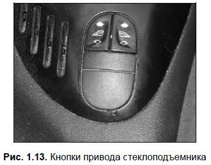
Отметим, что на многих автомобилях используются и ручные, и механические стеклоподъемники: например, спереди могут использоваться электрические стеклоподъемники, а сзади — ручные.
Лобовое (иногда его называют ветровое) и заднее стекла являются панорамными (за исключением задних стекол кузовов «хэтчбэк» и «универсал»). Лобовое стекло является трехслойным, а заднее и боковые стекла — закаленными. Поэтому лобовое стекло при ударе может лишь потрескаться, а все остальные стекла рассыпаются на мелкие кусочки. Это предотвращает водителя и пассажиров от травм, которые могли бы быть нанесены большими осколками стекла в результате дорожно-транспортного происшествия.
Спереди и сзади кузова установлены бамперы.На современных автомобилях, как правило, устанавливаются бамперы, изготовленные из пластмассы или других подобных материалов (пенополиуретан с добавкой стекловолокна и др.). В случае дорожнотранспортного происшествия при столкновении спереди или сзади именно бампер первым принимает на себя силу удара.
Водитель и пассажиры автомобиля размещаются на сиденьях. Большинство современных легковых автомобилей предусматривают перевозку людей в количестве не более пяти человек, включая водителя.
Передние сиденья автомобиля, как правило, являются раздельными и установлены на специальных салазках, по которым их можно передвигать в продольном направлении в зависимости от роста водителя и пассажира. Спинки передних сидений можно наклонять как вперед, так и назад, вплоть до полного откидывания спинки для организации спального места.
В трех- и двухдверных автомобилях («Опель-Астра», «Форд-Эскорт», ВАЗ-2108, «Запорожец» и др.) спинки передних сидений откидываются вперед, чтобы открыть пассажирам доступ к заднему сидению.
Кузова типа «хэтчбэк» и «универсал» можно преобразовывать из пассажирского в грузовой вариант и наоборот. При этом убирается складная полка или тент, отделяющий багажное отделение от пассажирского салона, а заднее сиденье складывается, в результате чего получается довольно внушительное пространство для перевозки объемных или многочисленных грузов.
Днища кузовов, а также внутренние поверхности крыльев покрыты специальным средством для защиты от коррозии и улучшения шумоизоляции. Но, несмотря на это, рекомендуется сделать полную антикоррозийную обработку кузова (в российских условиях эксплуатации это особенно актуально).
Внутри салона располагаются все органы управления автомобилем (рис. 1.14), а также великое множество устройств и приспособлений, призванных обеспечить комфорт, безопасность и удобство во время движения. К ним, в частности, относятся пепельница, подлокотники сидений, подголовники, ремни безопасности и т. д.
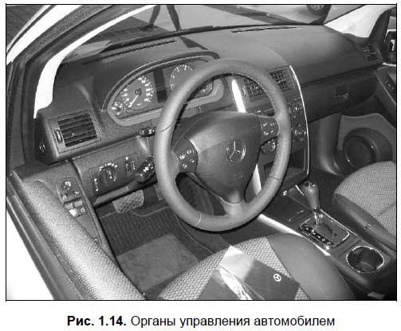
Снаружи кузов автомобиля окрашен заводом-изготовителем. Причем краска кладется не на голый металл: процесс покраски современного автомобиля довольно сложен и состоит из нескольких этапов: подготовка поверхности кузова к покраске, грунтовка, сушка, нанесение основного слоя и т. д. Это обусловлено тем, что автомобили эксплуатируются в сложных условиях — жара, дождь, снег, химические реагенты на дорогах и т. д., что подразумевает необходимость высокой антикоррозийной стойкости кузова и надежность всех слоев краски.